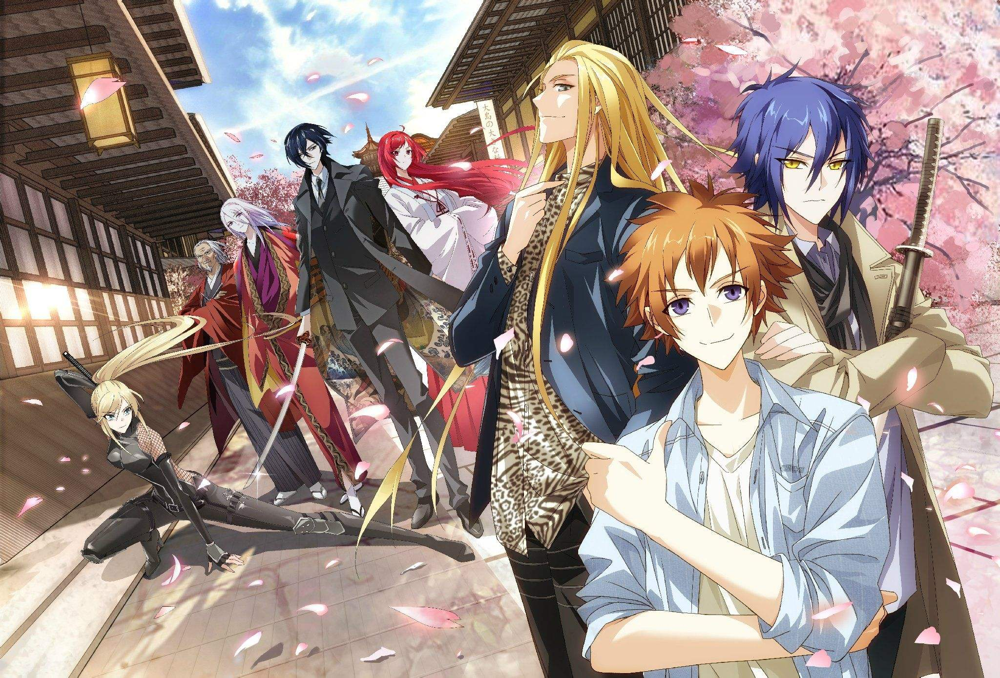
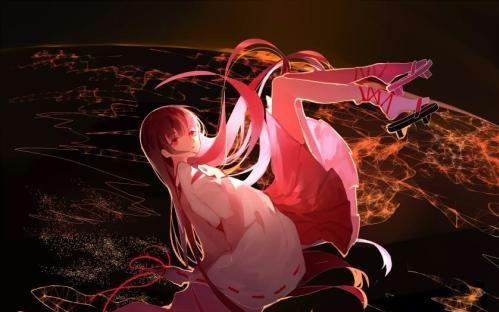
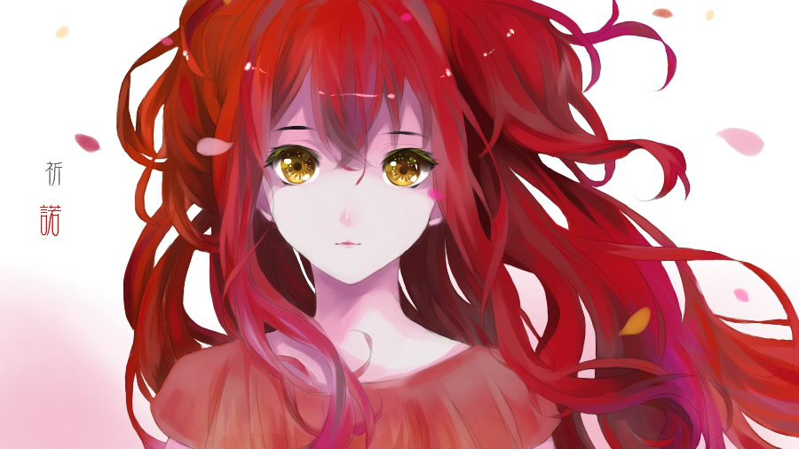

龙族Ⅰ：火之晨曦
路明非只是一个普通的懵懂高中生，一封来自卡塞尔学院的来信改变了他平淡的人生。在热血与神秘的呼唤下，在爱与梦想的抉择下，他毅然选择了未知。黑色的直升机划过天际，陌生国度的大门向他缓缓开启，平凡的中国小孩走上不平凡的屠龙之路。而遥远的卡塞尔学院却处处透着神秘－－奇怪的课程、搞笑的学长、疯狂的教师、骄傲的同学等。路明非刚刚进入学校就遭遇了无数的怪事。但是，随之而来的挑战也开始了，等级考试、言灵考验、地图搜索。龙的世界也终于在水下露出了神秘面纱。
龙族Ⅱ：悼亡者之瞳
衰仔路明非在生日那天收到了同学聚会的邀请，也同时接受了来自卡塞尔学院的任务。而特立独行的楚子航却独自承担了全部的任务，并且圆满完成。二人立即飞往芝加哥，开始了新的学期。
在芝加哥，他们邂逅了漂亮师妹夏弥。同时，昂热校长来到此地，带领路明非以亿元天价拍下了“七宗罪”。而当他们在六旗游乐园的过山车上开始庆祝吐槽时，一个意外发生了——过山车面临离奇崩塌，楚子航不得不冒险使用“爆血”技能将事故化解。而因为血统的不稳定，他也面临着来自校董会的审判，就在审判结束后，猎人网站却传来了令人震惊的消息——大地与山之龙王在北京苏醒。
全世界的混血种精英纷纷飞往北京，而酒徳麻衣团体也在北京布下了"杀龙之局“：魔兽世界副本、英雄级路明非账号、全方位监控。路明非和他的伙伴们纷纷潜入北京地铁，开始了新一轮的屠龙历程。

龙族Ⅲ：黑月之潮
在人类主宰的这个世界里，隐藏着有一种叫做龙族的存在，同时也有一种神秘的混血种存在，混血种天生的使命就是一屠龙。1991年冬，军人邦达列夫到达西伯利亚无名港口，他在那里看到了龙族骨骸与基因试验。但是谁也不曾料到，他的到来为这个绝密的基地带来了毁灭。港口爆炸后，他携带神秘物品离开，从此龙族世界的命运发生了改变。与此同时，一个神秘男孩带着女孩儿雷娜塔也悄悄离开了西伯利亚。
20年后，日本海域发现龙类心跳信号，校长昂热亲自制定SS计划，混血种少年恺撒、楚子航、路明非接受特别任务空降日本。一到东京，他们就受到了日本分部的盛情接待，执行员源稚生成为他们的导游。三个性格各异的少年带着任务压力来到东京，见分部领袖、交日本朋友、同时也流连街头夜生活、商场购物街，玩得不亦乐乎。随后，三人正式开始水下任务，深潜器将恺撒小组送至八千米深的海域，他们见到了令人惊叹的龙族城市。就在此时，龙类胚胎开始孵化，深潜器突然出现问题，日本分部失去联系，情况变得万分危急，三个少年将面临有史以来最严峻的考验。
龙族Ⅳ：奥丁之渊
路明非成为了卡塞尔学院的新任学生会主席，偶然中路明非发现，楚子航消失了，除了他，其他人都不记得有这个人曾经存在，并怀疑他在任务中脑震荡。路明非在痛苦中挣扎，找到远在小岛上上新娘课程的诺诺。他并不知道在他离开学院的当天，学院遭受袭击，蒙受重大损失，而他是嫌疑人。这一切充满了诡异，而芬格尔从古巴千里迢迢赶来助阵，由此路明非和芬格尔、诺诺决定回到了楚子航的故乡北京，寻找楚子航曾经留下的痕迹。却在无意中与诺诺闯入楚子航当年遇过的尼伯龙根。奥丁再次出现，长枪直指诺诺。路明非为了救诺诺，求助路明泽。

龙族Ⅴ：悼亡者的归来
这是地狱中的魔王们相互撕咬。铁剑和利爪撕裂空气，留下霜冻和火焰的痕迹，血液刚刚飞溅出来，就被高温化作血红色的蒸汽，冲击波在长长的走廊上来来去去，早已没有任何完整的玻璃，连这座建筑物都摇摇欲坠。